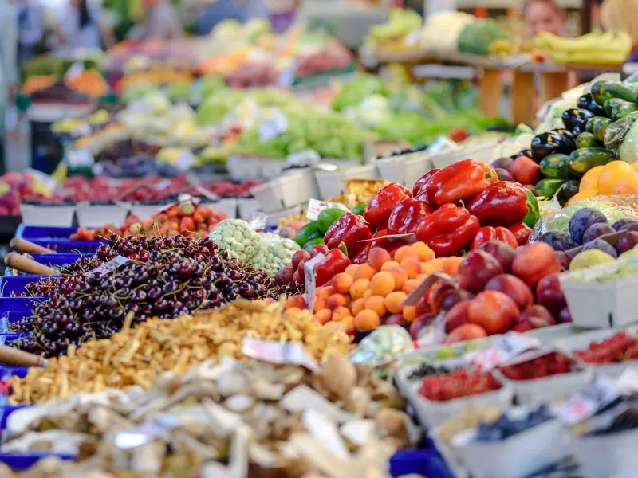
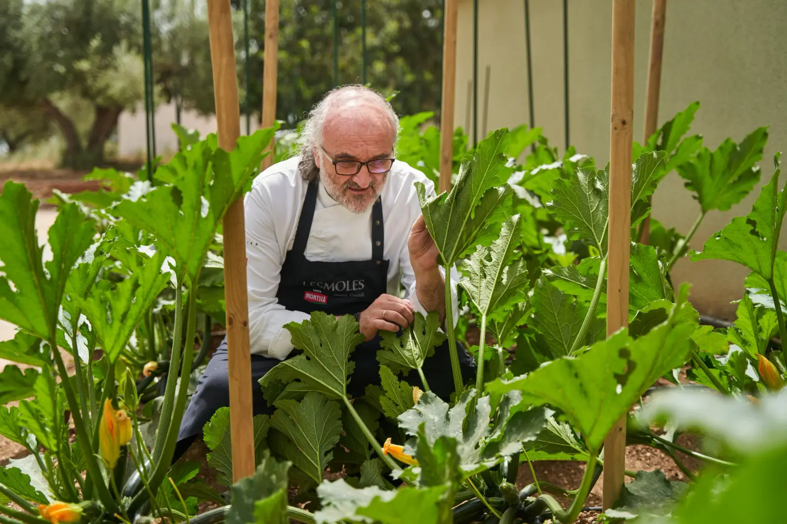
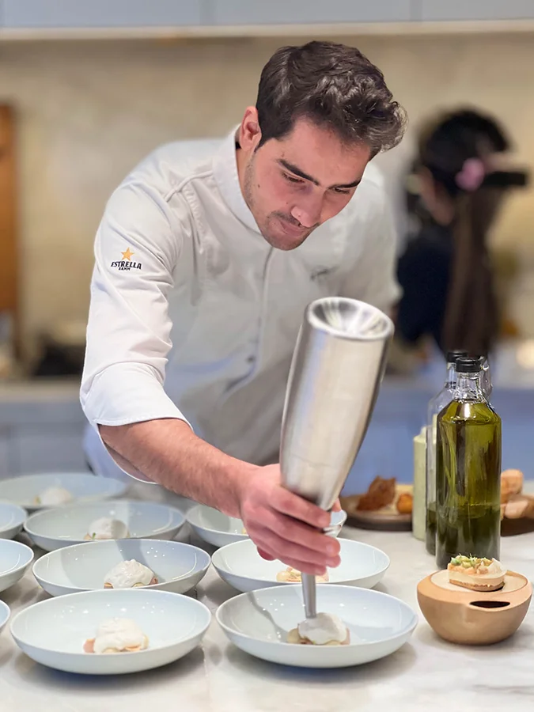
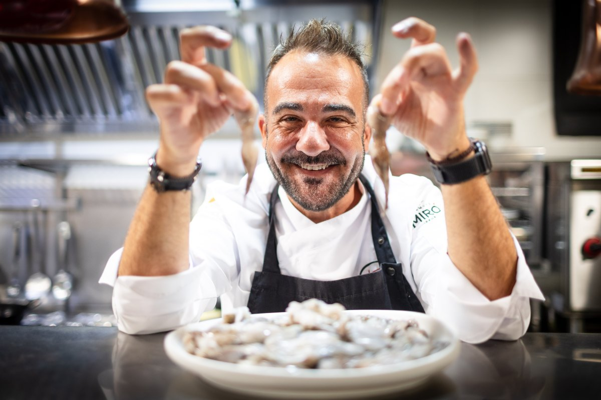
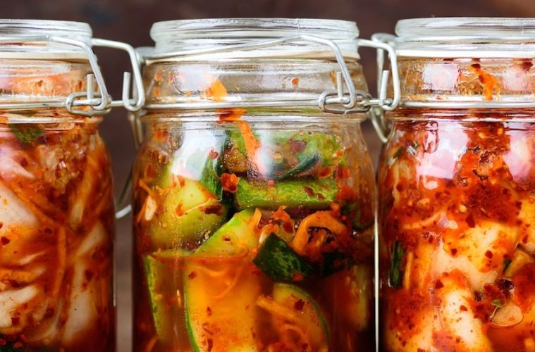

La gastronomía que dejó de gritar para empezar a escuchar.
Si algo ha quedado claro en estos primeros meses de 2026 es que la gastronomía ha decidido cambiar de conversación. Se acabó la era del ruido permanente, esa donde cada plato tenía que justificar su existencia con una técnica complicada, una historia elaborada o una provocación. Ahora respira diferente. Los chefs han descubierto algo que suena obvio pero tomó años redescubrirlo: cocinan porque saben hacerlo, porque el producto lo merece y porque la gente quiere comer bien, no sermones sobre arte culinario.
Los menús son más cortos, más vivos, más ajustados a lo que el mercado local ofrece cada mañana. El restaurante ya no pretende ser un escaparate de perfección ajena al territorio, sino un espejo honesto de dónde estamos y cómo comíamos bien hace años. De aquí nace todo lo demás.

Cocinar es contar de dónde vienes.
En la provincia de Tarragona, esto no es una revelación. Es la lógica de siempre, ahora finalmente validada globalmente. Les Moles en Ulldecona acaba de recibir el Sol Sostenible 2026 de la Guía Repsol. El chef Jeroni Castell construye su cocina desde la geografía pura. Si el Ebro está ahí, la cocina habla del Ebro. Si el mar está a una distancia razonable, la carta responde a eso. Su huerta de casi 1.000 metros cuadrados produce verduras que no viajan kilómetros innecesarios. Tienen su propio aceite, AOVE Sant Lluc. Trabajan con productores del entorno. Energía solar en la cocina. Nada de artificio.
En Cambrils, la Costa Daurada responde con referentes consolidados. Miramar domina el pescado y los arroces con precisión que solo viene de entender el género día a día. Bresca aporta creatividad sin renegar de las raíces mediterráneas. Y HIU, con su propuesta moderna y sorprendente, reinterpreta la base local con técnica contemporánea pero siempre leyendo el territorio. En la capital, MOHA representa ese mismo espíritu: la cocina que Tarragona necesitaba, actualizada sin renegar de sus raíces.


La cocina de las abuelas, entendida hoy.
Aquí está la clave de 2026. No es rechazo a la modernidad. Es síntesis: las técnicas que funcionaban, el saber que nuestros padres tenían en la cocina, pero informado por lo que hoy sabemos sobre nutrición, salud, bienestar. La escalivada no vuelve porque sea vintage. Vuelve porque alimenta de verdad, sabe bien, usa ingredientes de proximidad y requiere una técnica que respeta el producto. Lo mismo con un caldo hecho a fuego lento. Una sopa de verduras. Un pescado a la sal. Una olleta de verdura y legumbre. Un pan de masa madre.
Nuestras abuelas cocinaban sin saber de probióticos ni salud intestinal, pero sus fermentados, encurtidos y conservas funcionaban nutricionalmente. Hoy entendemos por qué. Las técnicas ancestrales de conservación —fermentación, salazón, ahumado— aportan sabores profundos y beneficios reales para la salud. No por moda. Porque funcionan.

Lo antiguo es nuevo porque funciona.
Kimchi, miso, kéfir, chucrut, salsas fermentadas, pan de masa madre, pescados encurtidos: aparecen en menús de la alta cocina y también en tabernas. El consumidor actual —especialmente las generaciones jóvenes— busca que su comida funcione como alimento, que apoye su salud sin sonar a medicina. En Tarragona, donde la tradición culinaria es patrimonio vivo, esto resuena especialmente. Una escalivada fermentada en el Camp. Pan con más carácter en Reus. Conservas que nuestras abuelas hacían, ahora entendidas nutricionalmente. No son exotismos. Son continuidades reinterpretadas, tradición que respira.

Tarragona no descubre esto en 2026. Lo ha hecho siempre.
Joan Pamies en Riudoms, MOHA en Tarragona, HIU en Cambrils, Les Moles en Ulldecona, Miramar en Cambrils, El Terrat en la capital: llevan años cocinando desde la lógica territorial. Lo que cambia ahora es que el mundo lo reconoce como modelo. Cuando la Guía Repsol premia la sostenibilidad de Ulldecona, cuando Michelin reconoce 16 restaurantes de la demarcación por su coherencia territorial, cuando American Express destaca la restauración de proximidad en la Costa Daurada, no es porque Tarragona haya descubierto algo nuevo. Es porque llevar años haciéndolo bien tiene un valor que trasciende modas.
Las Terres de l'Ebre, el Camp, la Conca de Barberà, el Priorat: cada comarca tiene sus productores, sus saberes, sus ritmos. La gastronomía de 2026 respeta eso. La honra. La pone en la mesa sin disculparse.
La gastronomía de 2026 no es revolucionaria. Es honesta. Respeta el producto, el territorio y al comensal. Recupera lo que sus abuelas cocinaban, pero lo entiende hoy: más sano, más consciente, más sabroso.
Gourmets de Tarragona · mayo de 2026Artículo publicado en el Blog Gourmet de Gourmets de Tarragona · mayo de 2026 · Fuentes: Guía Michelin 2026, Guía Repsol 2026, Gastronomic Forum Barcelona.
Dami Molina es vocal cultural de Gourmets de Tarragona.